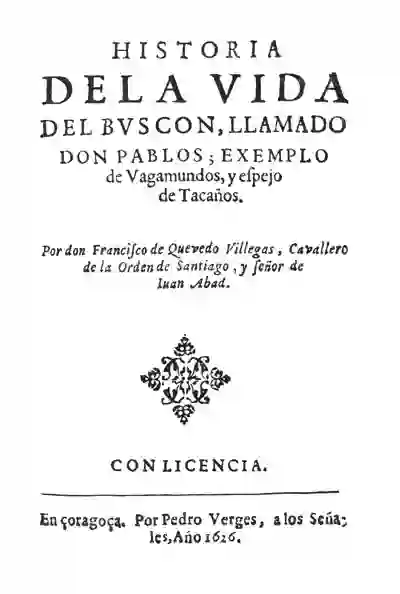

Novela Picaresca: Un recorrido por la España del Siglo XVI ¿Qué es la novela picaresca? La novela picaresca es un subgénero narrativo que surgió en España durante el Siglo de Oro, caracterizado por presentar las aventuras de un pícaro, un personaje marginal y sin escrúpulos que sobrevive por medio del ingenio y la astucia. Estas obras ofrecen una crítica mordaz a la sociedad de la época, exponiendo sus vicios y desigualdades.
🕎El centro de la historia es un pícaro, un individuo de baja clase social que recurre a la astucia y al engaño para sobrevivir.
🕎Las novelas picarescas se caracterizan por su realismo, ofreciendo una visión cruda y sin idealizar de la sociedad de la época.
🕎Las obras del género picaresco contienen una fuerte crítica social, exponiendo las hipocresías, la corrupción y las desigualdades presentes en la sociedad.
🕎 La narración suele presentarse en forma de episodios o aventuras sin una conexión lineal clara, siguiendo las peripecias del pícaro.
🕎El humor negro y la ironía son elementos comunes en las novelas picarescas, utilizados para exponer la realidad de forma mordaz.
| Nombre de la obra y Año de publicación | Autor | De qué trata | Imagen |
|---|---|---|---|
| La vida de Lazarillo de Tormes y de sus fortunas y adversidades (1554) | Anónimo | Considerada la primera obra picaresca, narra la vida de Lázaro de Tormes, un niño que desde pequeño se ve obligado a servir a diferentes amos para sobrevivir. | |
| El ingenioso hidalgo don Quijote de la Mancha (1605 y 1615) | Miguel de Cervantes | Aunque no es una novela picaresca pura, presenta elementos del género en la figura de Sancho Panza, el escudero de Don Quijote, quien representa al pícaro con sus características propias. | |
| Historia de la vida del Buscón, llamado don Pablos, ejemplo de vagamundos y espejo de engaños (1626) | Francisco de Quevedo | Una de las obras cumbres del género, narra la vida de Pablos, un pícaro que recorre España utilizando su ingenio para estafar y sobrevivir. |  |
https://humanidades.com/novela-picaresca/
https://www.unprofesor.com/lengua-espanola/la-novela-picaresca-y-sus-caracteristicas-3042.html
https://descargas.intef.es/recursos_educativos/It_didac/Leng_ESO/3/11/03
_Narrativa_renacentista_realista/la_narrativa_realista_la_novela_picaresca.html